Music.
My musical journey began with the piano in the 2nd grade, followed by traditional instruments in the 6th. That early curiosity sparked a lifelong exploration, leading me to pick up new instruments along the way. Today, I play 7 instruments with varying degrees of expertise.
Piano
My musical journey began with the piano in the 2nd grade, establishing a foundational discipline and love for melody. Over the years, I evolved from a little girl who hated going to lessons to an absolute music lover.
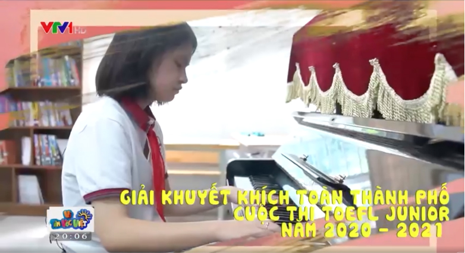
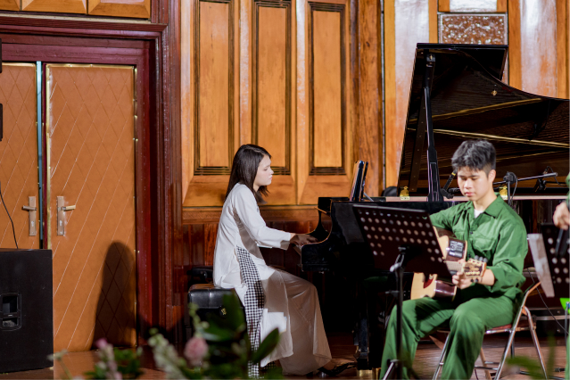
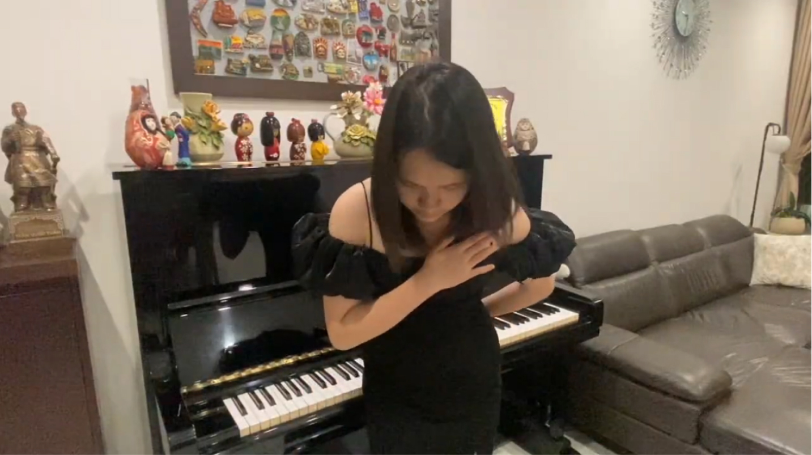
Traditional Instruments
Expanding into traditional instruments in the 6th grade opened up a deeply resonant cultural dialogue. This exploration grew beyond a casual interest into a profound appreciation for heritage.
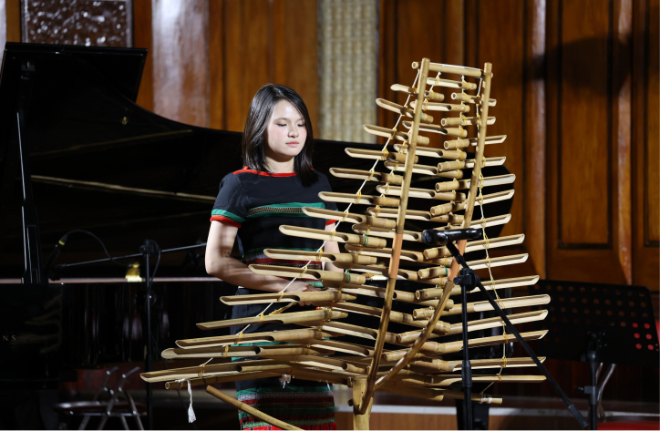
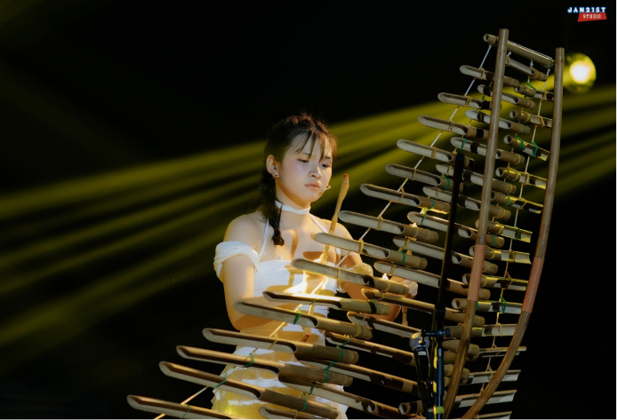
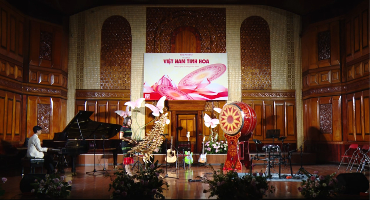
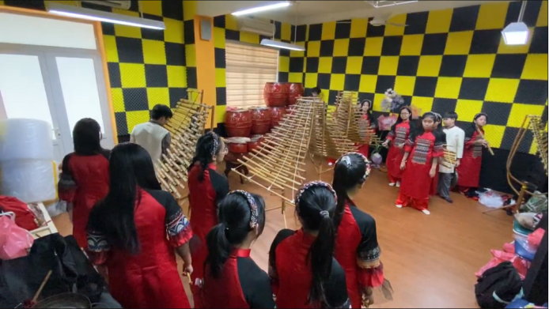
Viet Nam Tinh Hoa Concert
Bridging classical heritage with contemporary energy. It was the very first time I tried playing a modern drumset. Performing at the Vietnam Tinh Hoa Concert marked my debut on a modern drum set, where I played piano, drums, and T'rung (a Vietnamese tradditional instrument).
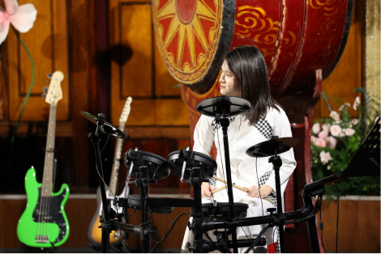
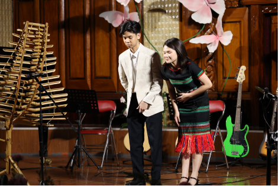
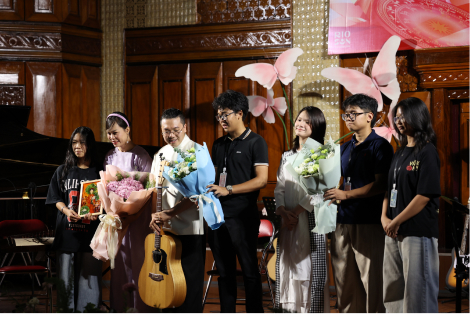
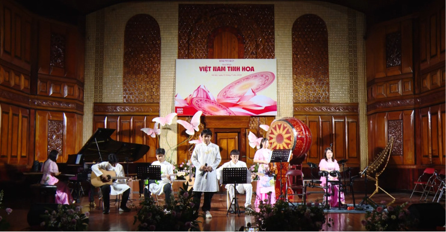
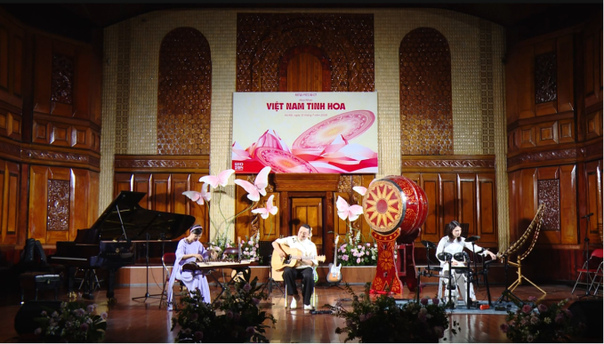